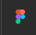
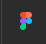
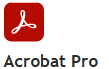
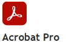

I am a Senior Web Strategist & Data Analyst with over 15 years of experience in helping mission-driven organizations to transform digital complexity to clarity through strategic, user-centered solutions. My work is a blend of Data analysis, Content strategy, User Experience design (UI/UX), Search Engine Optimization and Accessibility which create a digital ecosystem that is innovative and compliant.
I began my career as an interior designer, where I refined my natural strengths in design, color, balance, and structure — skills that continue to shape my approach to digital design and strategy.
Projects & Tasks
These projects showcase my expertise at the intersection of web strategy, data analytics, and public-facing communications. From leading the redesign of the FDIC’s Bank Failures in Brief website to providing insightful reports and analytics that informed strategic decision-making, and managing the mission-critical Failed Bank website during closures. Together, they highlight my role in enhancing transparency, optimizing data use, and ensuring seamless user experiences in high-stakes environments.
Redesign Project
FDIC Bank Failures in Brief
The Bank Failures in Brief is a public-facing website that shows the synopsis of Failed banks from 2001
In the media - The redesigned Bank Failures in Brief website has been referenced in financial analysis articles, underscoring its role as a trusted source for transparency and public access to banking data

Reports & Analytics
Data analyst with experience turning complex datasets into actionable insights, managing divisional reports and dashboards, and delivering analytics that drive business strategy and decision-making. Partnered with stakeholders to ensure accurate and actionable data insights.
FDIC Resolutions & Key Projects
As a contractor in the FDIC’s Resolutions & Receiverships Division, I managed the mission-critical Bank Resolution website, ensuring the public received accurate, real-time information during bank closures.
- Managed the Bank Resolution website, delivering timely updates to stakeholders and the public.
- Oversaw the end-to-end lifecycle of resolved financial institutions.
- Collaborated with cross-functional teams to ensure smooth operational transitions during closures.
Skills
Frontend Web Development
Skills
HTML, CSS, JavaScript, UI/UX Design, Responsive Design, Section 508 Audits, Search Engine Optimization (SEO), Web Content Strategy, Global Privacy and IT Security
Tools
Adobe Experience Manager (AEM), Drupal, Adobe Photoshop, Dreamweaver, Adobe Acrobat, Figma, Qualtrics Survey, GovDelivery, ServiceNow, AuthorWeb
 

Web and Data Analysis and Visualization
Skills
Data Visualization and Dashboarding, AI Driven Data Analytics with Python, Database Queries, Interactive Dashboards, SQL and BigQuery, Statistical Modeling and Machine Learning for Data Analytics
Tools
Adobe Analytics, Tableau, Microsoft Excel, Crystal Reports, Google Colab, Looker Studio


IT Project / Program Management
Skills
Directed full lifecycle program management for multi-year digital transformation initiatives, including strategic planning, execution, milestone tracking, and risk mitigation. Project Management, Stakeholder Management, Requirements Gathering and Analysis, B2B, Customer Success, Communication Strategies, Data and Business Analysis
Tools
SharePoint, Jira, Microsoft Office, Agile/Scrum, Microsoft Teams & Zoom
 
